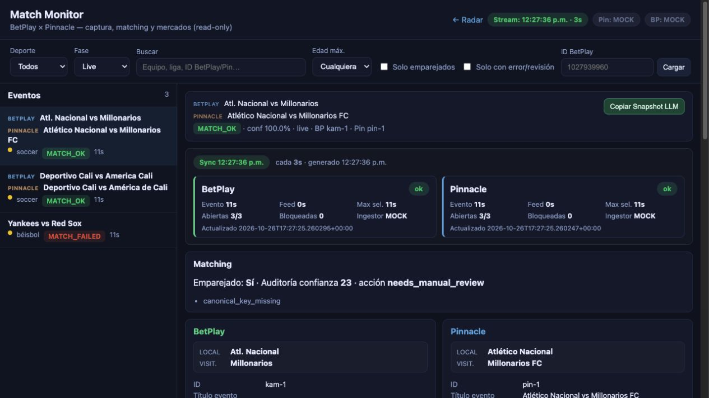

01 / Match Monitor
Un evento, desde ambos lados.
Estado de las fuentes, emparejamiento de eventos y antigüedad de los datos. El ejemplo también expone campos que requieren revisión manual.
BotPlay Radar es un proyecto funcional de monitoreo de datos deportivos. Explora su interfaz real y cómo esa experiencia podría adaptarse a un panel para Aviator.
BotPlay Radar / Python / Real-time interfaces
Capturas reales de BotPlay ejecutando sus datos de ejemplo integrados. Haz clic en una imagen para verla en detalle.
Estado de las fuentes, emparejamiento de eventos y antigüedad de los datos. El ejemplo también expone campos que requieren revisión manual.
Selecciones, cuotas y detalle por fuente. Es inspección de datos disponibles, no predicción de resultados futuros.
BotPlay compara mercados deportivos. JDB Aviator es otro caso de uso. Se aprovecha la experiencia de monitoreo; una integración con el juego requiere investigación.
Estado de fuentes, actualizaciones periódicas e inspección de eventos.
PROPUESTA PARA AVIATORUn monitor de rondas con estado de conexión, ronda actual y multiplicadores observados.
Timeline, emparejamiento y controles de calidad con advertencias visibles.
PROPUESTA PARA AVIATORHistorial de rondas y estadística descriptiva sobre datos disponibles y autorizados.
Motor de alertas determinísticas y registro de eventos en el código.
PROPUESTA PARA AVIATORNotificaciones configurables. WhatsApp necesitaría una integración adicional con un proveedor.
Un pequeño concepto interactivo para visualizar la propuesta. Cada ronda es sintética y se ejecuta únicamente en tu navegador.
BotPlay utiliza Python, FastAPI, server-sent events, snapshots JSONL, emparejamiento de eventos y un motor de alertas determinísticas. Este caso reutiliza evidencia visual y patrones del producto; no presenta una integración existente con Aviator o WhatsApp.